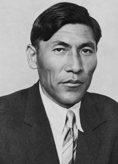
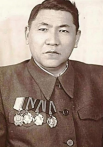
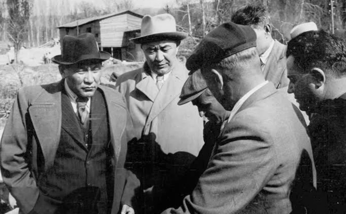
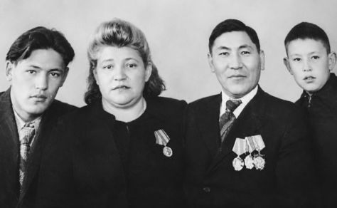
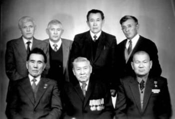

Қазақ тілін сақтау және дамыту
Қазақ тілінің байлығын зерттеп, сөздік қорын жүйеледі. Тіліміздегі араб-парсы сөздерінің мағынасын түсіндіруге арналған сөздіктер құрастырды. Ана тілінің дамуы әр азаматтың міндеті екенін насихаттады.

1904 — 1989
Қазақ мемлекет әрі қоғам қайраткері · ғалым · сөздіктанушы
«Ана тілдің даму қамы — ортақ міндет»
Нұртас Дәндібайұлы Оңдасынов — 1904 жылы 26 қазанда Түркістан өңіріндегі Үшқайық ауылында қарапайым шаруа отбасында дүниеге келген қазақтың аса көрнекті мемлекет және қоғам қайраткері, ғалым.
Ол Қазақ КСР Халық Комиссарлары Кеңесінің төрағасы (үкімет басшысы), Қазақ КСР Жоғарғы Кеңесі Төралқасының төрағасы қызметтерін атқарып, елдің экономикасы мен ауыл шаруашылығын, ғылымы мен мәдениетін дамытуға зор үлес қосты.
Зейнеткерлікке шыққан соң өмірінің соңғы жылдарын ғылымға арнап, қазақ тіліндегі араб және парсы сөздерін зерттеді. Осы бағытта бірнеше түсіндірме сөздік құрастырып, қазақ тілінің сөздік қорын байытуға елеулі еңбек сіңірді.
Кезеңді таңдап, Нұртас Оңдасыновтың өмір жолымен танысыңыз.
Түркістан өңіріндегі Үшқайық ауылында қарапайым шаруа отбасында дүниеге келді.
Анасы Жұмагүл қайтыс болып, Дәрігүлдің тәрбиесінде өседі. Ауыл молдасынан арабша сауат ашады.
Елдегі саяси-әлеуметтік қиындықтар, қуаңшылық пен ашаршылық балалық шағына ауыр әсер етті.
Ташкентке барып, күнкөріс үшін жұмыс істейді. Білім алуға деген талпынысы арта түседі.
Ташкенттегі №14 мектеп-интернатқа оқуға түседі. Ғани Мұратбаев сияқты зиялылардан тәлім алады.
Ғани Мұратбаев ұйымдастырған комсомол ұйымына қабылданады.
Ташкент орман шаруашылығы техникумында білім алып, кәсіби маман болып қалыптасады.
Қызылорда-Қазалы су шаруашылығы округінде статист болып алғашқы еңбек жолын бастайды.
Әулиеата (қазіргі Тараз) қаласындағы су шаруашылығы мекемесінде кіші техник болады.
Ташкенттегі Ирригация институтында білім алып, инженерлік білімін жетілдіреді.
Қазақ орман шаруашылығы басқармасында, кейін Жер халық комиссариатында басшылық қызмет атқарады.
Шығыс Қазақстан облыстық атқару комитетінің төрағасы болып тағайындалады.
Қазақ КСР Халық Комиссарлары Кеңесінің төрағасы (үкімет басшысы) болып тағайындалады.
Соғыс жылдарында өндіріс пен ауыл шаруашылығын ұйымдастырып, майданды қамтамасыз ету ісіне басшылық етеді.
Қазақ КСР Ғылым академиясын құру жұмыстарына белсене атсалысады.
Қазақ КСР Үкіметінің төрағасы қызметінен босатылады. Мәскеуде білімін жалғастырады.
Қазақ КСР Жоғарғы Кеңесі Төралқасының төрағасы болып сайланады.
КСРО Жоғарғы Кеңесі Төралқасы төрағасының орынбасары қызметін атқарады.
Гурьев (қазіргі Атырау) облыстық партия комитетінің бірінші хатшысы болып, өлкенің дамуына үлес қосады.
Зейнеткерлікке шығып, Мәскеуге қоныс аударады да, ғылыми жұмысқа ден қояды.
«Арабша-қазақша түсіндірме сөздігі» атты еңбегін жариялайды.
«Парсыша-қазақша түсіндірме сөздігі» жарық көреді.
«Арабша-қазақша түсіндірме сөздігінің» бірінші томы жарық көреді.
Мәскеу қаласында 85 жасында дүниеден өтті. Туған жері Түркістанға жерленді.
Қазақ тілінің байлығын зерттеп, сөздік қорын жүйеледі. Тіліміздегі араб-парсы сөздерінің мағынасын түсіндіруге арналған сөздіктер құрастырды. Ана тілінің дамуы әр азаматтың міндеті екенін насихаттады.
«Арабша-қазақша түсіндірме сөздік», «Парсыша-қазақша түсіндірме сөздік» және «Араб текті қазақ есімдері» еңбектері арқылы сөздердің шығу тегі мен мағынасын ашуға атсалысты.
Мемлекеттік қызметі кезінде ұлттық өнер мен мәдени мекемелердің дамуына, жастардың білім алуына жағдай жасап, ұлттық мәдениеттің сақталуына үлес қосты.
1946 жылы Қазақ КСР Ғылым академиясының құрылуына атсалысты. Ұлттық мамандарды даярлауға, білімді жастардың көбеюіне ерекше көңіл бөлді.
Ана тілін құрметтеу, ұлттық тарих пен мәдениетті білу, білім мен ғылымға ұмтылу, халыққа адал қызмет ету — кейінгі ұрпаққа қалдырған басты құндылықтары.
«Ана тілдің даму қамы — ортақ міндет» атты қолжазба мақаласы оның тіл мәселесіне деген терең көзқарасын айқын көрсетеді.
Қазақ тіліндегі араб сөздерінің мағынасын ашатын іргелі еңбек.
Ашу → 1974Тіліміздегі парсы тектес сөздерді жүйелеген түсіндірме сөздік.
Ашу → 2011Ғалымның сөздіктану саласындағы кешенді еңбегінің жаңа басылымы.
Ашу →Нұртас Оңдасыновтың өмірінен сыр шертетін суреттер. Үлкейту үшін суретті басыңыз.




Нұртас Оңдасынов туралы деректі видеоматериал.
Жасанды интеллект көмегімен дайындалған танымдық видео.
Нұртас Оңдасынов туралы сұрағыңызды қойыңыз — чат-бот жауап береді.